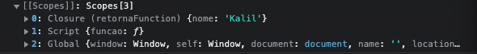

Closures
Closures é a habilidade que a função tem em acessar seu escopo léxico, onde poderemos verificar os escopos que a função tem acesso utilziando o console.dir e acessando o console do navegador.
See the Pen 072 - Closures by KalilAziz (@kalilaziz) on CodePen.
